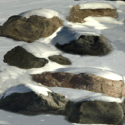
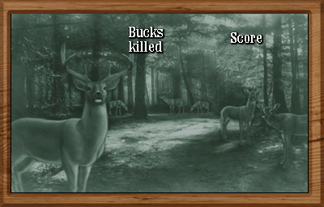

The order that the regions seem to have been developed in are first the Midwest, second the Northeast, and then probably developed more quickly and together, the West and the South. This is supported by how the levels are labeled internally in the game, and also due to the fact that the South and West share a lot of assets with each other.
It can be safely said though that the Midwest (the snowy region) was developed first undoubtedly, the biggest case to support this is the fact that every single stone in the game uses the same snowy stone texture; and outside of the Midwest, the UV maps of the stones are adjusted so the snow that has rested ontop of the stones is no longer visible. Also; the midwest lacks a lot of the 'accents' placed in the other areas of the game, such as hunting stands, tractors, or other props. In a way it is the simplest region of the game, and in turn the region which corresponds the most to nature.
Some other interesting things to note, what is boasted as "life like fog" in the [games flyer] TODO: HYPERLINK is actually just a semi-transparent plane with a fog texture, the same goes for the beams of light.
The flyer also boasts "over 200 authentic and unique 3D hunting scenes" - however 4 regions with 4 times of day and 4 levels per time of day is 64 levels, plus the 16 bonus levels, only leaves us with 80 total levels, not the promised "over 200". The flyer also advertises an optional "bloodless" mode, and even in the operator menu there is a setting to toggle this mode on and off. However blood never seems like it was implemented; no blood appears in the game and no blood related particles or textures are present in the game files, the only change that results in flipping this option is on the score screen "Bucks Killed" changes to "Bucks Tagged".
 Click to Enlarge